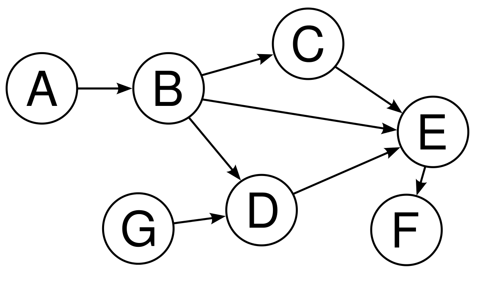

Graph Problems Patterns
Recognizing that a problem is related to graph is the most challenging aspect of dealing with graph-related problems. To do so, you can look for connections between data points to realize a problem can be represent using graph. Graph problems can be divide into 3 groups (patterns) which are Grouping, Solvability, and Ordering patterns.
Grouping problems
These problem requires us to put a set of data points into groups, these groups are basically connected components (a sub-graph in which every vertex can reach any other vertex). There are many algorithms use to find connected components in graph.
Solvability (Pathing) problems
This is the most common pattern in graph, it often ask to find a valid path or shortest path. Note: shortest path here is not about distance but rather about choices. For example, in a chess game, there are multiple ways to arrive at check mate from a particular position, we want to find the shortest number of moves to win, to solve this we can generate all possible moves to build a decision tree, then traverse the tree from root to find shorst path to the win node.
Frame work
1. Define start state and win (end) state.
2. Define the edge (connection) between data. How one state transit to another state.
3. Perform a graph search.
Ordering problems
Given a set of data that have some dependence relationship, order these data points so that they satisfy the dependence requirement. For example, courses that have prerequisite and corequisite can be solve using Topology sort algorithm